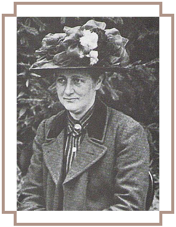

The tenant farmer John Cannon and his family agreed to stay on to manage the farm for her while she made physical improvements and learned the techniques of fell farming and of raising livestock, including pigs, cows and chickens; the following year she added sheep. Realising she needed to protect her boundaries, she sought advice from W.H. Heelis & Son, a local firm of solicitors with offices in nearby Hawkshead. With William Heelis acting for her, she bought contiguous pasture, and in 1909 the 20 acres (8.1 ha) Castle Farm across the road from Hill Top Farm. She visited Hill Top at every opportunity, and her books written during this period (such as The Tale of Ginger and Pickles, about the local shop in Near Sawrey and The Tale of Mrs. Tittlemouse, a wood mouse) reflect her increasing participation in village life and her delight in country living.
Owning and managing these working farms required routine collaboration with the widely respected William Heelis. By the summer of 1912, Heelis had proposed marriage and Beatrix had accepted; although she did not immediately tell her parents, who once again disapproved because Heelis was only a country solicitor. Potter and Heelis were married on 15 October 1913 in London at St Mary Abbots in Kensington. The couple moved immediately to Near Sawrey, residing at Castle Cottage, the renovated farmhouse on Castle Farm, which was 34 acres large. Hill Top remained a working farm but was now remodelled to allow for the tenant family and Potter's private studio and workshop. At last her own woman, Potter settled into the partnerships that shaped the rest of her life: her country solicitor husband and his large family, her farms, the Sawrey community and the predictable rounds of country life. The Tale of Jemima Puddle-Duck and The Tale of Tom Kitten are representative of Hill Top Farm and her farming life and reflect her happiness with her country life.
Rupert Potter died in 1914 and, with the outbreak of World War I, Potter, now a wealthy woman, persuaded her mother to move to the Lake District and found a property for her to rent in Sawrey. Finding life in Sawrey dull, Helen Potter soon moved to Lindeth Howe (now a 34 bedroomed hotel) a large house the Potters had previously rented for the summer in Bowness, on the other side of Lake Windermere, Potter continued to write stories for Frederick Warne & Co and fully participated in country life. She established a Nursing Trust for local villages and served on various committees and councils responsible for footpaths and other rural issues.